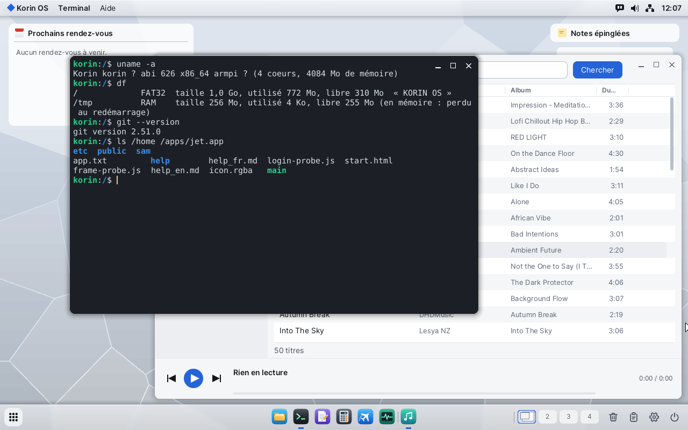
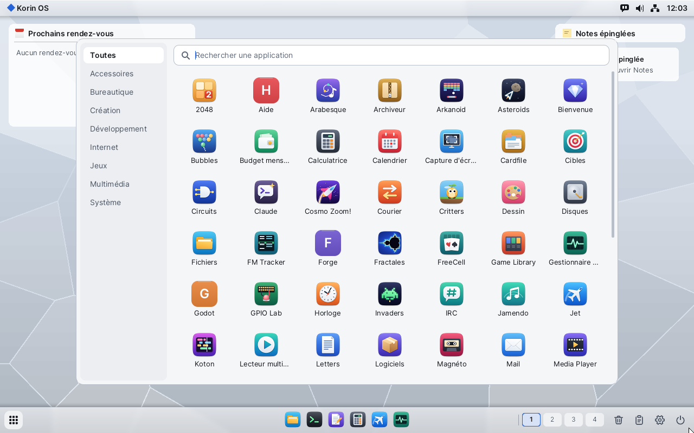

Un système d'exploitation de bureau, écrit à partir de rien.
Korin OS tourne sur les PC x86-64 et sur le Raspberry Pi 4. Il a un micro-noyau, son propre bureau, Elegant, une couche POSIX pour porter des logiciels, GCC dans le système, des comptes d'utilisateurs et des paquets signés.

Un système, deux sortes de machines
Korin est né sur le Raspberry Pi 4, en assembleur AArch64. Depuis novembre 2026 il tourne aussi sur les PC x86-64, et la plus grande partie du système a été réécrite en C : les deux machines partagent les mêmes kits, services, commandes et le même bureau.
x86-64 avec UEFI
Développé sur un HP ZBook Fury 17 G8 : NVMe, USB, Wi-Fi (Intel AX201), son HD Audio, graphisme Intel par Mesa, pavé tactile et batterie. S'installe depuis une clé USB.
Raspberry Pi 4
La cible d'origine : USB, Ethernet, Wi-Fi, son, le GPU V3D par Mesa, le connecteur à 40 broches. Démarre sur une carte microSD.
Les mêmes apps sur les deux
Apps, kits et services sont écrits une fois, en C ou en C++. Seul ce qui dépend de la machine reste à part.
Ce qui fait Korin
Korin n'est ni Linux ni un BSD. Chaque couche est la sienne, du chargeur de démarrage au bureau, avec par-dessus des projets libres connus, portés.
Un vrai micro-noyau
Pilotes, systèmes de fichiers, pile réseau et serveur de fenêtres sont des process à part. Un pilote qui tombe est relancé, pas le système.
Elegant, son propre bureau
Un serveur de fenêtres composite avec une barre, un lanceur d'apps, quatre espaces de travail, des widgets et deux thèmes, Givre et Onyx Noir.
Des kits pour les apps
Des bibliothèques partagées, UIKit, NetKit, AudioKit, MediaKit, GlKit…, donnent à toutes les apps les mêmes widgets, thème, réseau et médias.
POSIX là où ça sert
newlib et la libposix de Korin : assez pour porter bash, git, CPython, WebKit, Godot, .NET et beaucoup de bibliothèques.
Construire dans l'OS
GCC 14.2 tourne dans Korin, avec FASM, FreeBASIC, le SDK .NET, Python, git et bash.
Comptes et paquets signés
Un écran de connexion, sudo, un dossier
personnel par utilisateur, et un gestionnaire de paquets qui vérifie la signature de chaque index.
Des logiciels pour de vrai
Plus d'une centaine de paquets : un navigateur WebKit, une suite bureautique, le courrier, la musique, des jeux, des émulateurs, un logiciel de CAO, le moteur Godot et des outils de développement.
- Jet, un navigateur WebKit avec WebGL
- Letters, Sheet, Slides : DOCX, XLSX, PPTX et OpenDocument
- Les clients Jamendo et Spotify, un lecteur multimédia, un tracker
- Forge, la CAO paramétrique sur Open CASCADE
- Godot 4.7, .NET 10 avec Avalonia, Python 3.14

Pour aller plus loin
Fonctionnalités
Le bureau, les comptes, les logiciels et les apps.
Développement
Langages, kits, couche POSIX et paquets.
Technique
Noyau, services, pilotes et systèmes de fichiers.
Télécharger
La clé d'installation PC et les images du Raspberry Pi.
Korin OS est un projet personnel. Sur PC, il est développé et essayé sur un seul portable : d'autres machines peuvent manquer de pilotes. Sur ces pages, des étiquettes disent ce qui a été vérifié sur le vrai matériel et ce qui ne l'a été que sous l'émulateur QEMU.